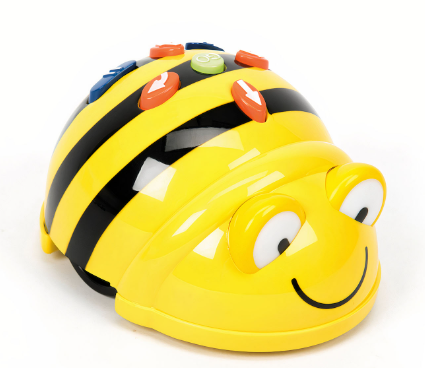

¿De qué trata el producto final?
Para la elaboración de nuestro tapete interactivo del Bee-Bot (compuesto por casillas de insectos y casillas de adivinanzas tanto escritas como integradas con voz del alumnado a partir de códigos QR), propongo la combinación de dos herramientas: Canva (para el diseño de las plantillas a través de las tablets del ciclo y la cuenta educativa gratuita del centro) y Vocaroo (una aplicación web muy sencilla para la grabación de voz y generación automática de códigos QR).
Mi objetivo al usar estas herramientas es que mi alumnado se convierta en creador de contenido y no en mero espectador, dado que con las herramientas sencillas que ofrece Canva pueden elegir los dibujos de los insectos que desean incorporar y además jugar con sus voces y el lenguaje oral a través de la app de grabación de voz, algo que realmente les motivará al poder escucharse a sí mismos/as en el tapete del Bee Bot con el que trato que se inicien en el pensamiento computacional.
Me gustaría decir que he decidido apostar por la combinación de Canva y Vocaroo porque son herramientas web gratuitas, muy versátiles y se adaptan perfectamente a la realidad de mi aula de Infantil. Al no requerir instalaciones complejas, podemos utilizarlas fácilmente por rincones con las tablets del ciclo o proyectando en la Pizarra Digital (PDI). Además, a nivel pedagógico y de competencia digital, esta elección creo que es la adecuada al hablar de alumnado que, en su mayoría es prelector, por lo que con el código QR rompo la barrera de la lectura y le confiere al juego del Bee Bot una esencia más personal y mágica al poder escucharse a sí mismos/as.
